Symbol Grimoire
Green
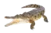
Crocodiles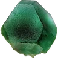
Fluorite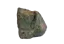
Greensand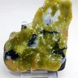
Lizardite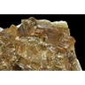
PhlogopitePholocomitePink Sunstone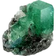
TsavoriteTumbled Crystals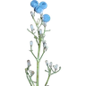
Blue CohoshBlueberryBodhi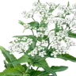
Boneset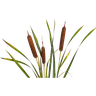
Cat TailCatnip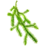
Club MossCoca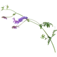
Giant Vetch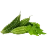
GourdGrapeGrassGreen TeaGround IvyGroundsel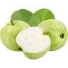
GuavaHazelHelichrysumHemlockHempHennaHickoryHigh John the ConquererHollyHoly BasilHopsHorehoundHorseradishHorsetailHouseleekIrish MossIvyJuniperKava-KavaKelpKnotweedLady's MantleLarchLeekLemonLemon BalmLemon VerbenaLemongrassLettuceLicoriceLily of the ValleyLimeLindenLocustLovageMagueyMaidenhairMale FernMarjoramMay AppleMimosaMintMistletoeThe color of nature, of fertility, of life, green has often been linked with red in religion and magick.
Stones of this hue are receptive. They are used in healing magick, perhaps by surrounding a green or blue candle with the gems, lighting the candle, and then visualizing the sick person as a vibrant, totally healed person.
They can also be carried or worn to guard the health. Specifically, green stones are thought to strengthen the eyes, control the kidneys, relieve stomach problems and prevent migraines.
Ruled by  Taurus, green stones are worn during gardening to promote luxuriant growth, or are placed in the earth for this purpose. If you have house plants, try putting a few empowered green stones in the earth. Due to such usage, they were also thought to increase fertility and therefore to promote conception.
Taurus, green stones are worn during gardening to promote luxuriant growth, or are placed in the earth for this purpose. If you have house plants, try putting a few empowered green stones in the earth. Due to such usage, they were also thought to increase fertility and therefore to promote conception.
Their associations with the element of Earth also lead to their use in spells involving money, riches, prosperity and luck.
They are grounding and balancing stones which can be worn to attune with the Earth.
Symbolic Overview
Green is an amalgam of blue and yellow, and is the color of the fourth chakra. Green is the universal symbol for "Go!" to red's "Stop."
Jealousy is described as the "green-eyed monster." This saying is actually Shakespearean in origin. In Othello, he describes jealousy as being like the green-eyed monster, the cat, "which doth mock the meat it feeds on." Probably the same origin gives us "green with envy."
Green is a soothing, refreshing color, so it is interesting to discover why it is sometimes believed to be unlucky. It is still a statistical fact that fewer green cars are sold in the UK than any other color because of this superstition. In the Middle Ages, green was meant to be the color of the Devil. He is even depicted on a stained-glass window in Chartres Cathedral as having green skin and green eyes. In this sense the color denotes an alien, nonhuman, possibly threatening being; no surprise, then, that it is the color of the Fairy Folk, and it might well be that the color is lucky or unlucky depending on their attitude toward you. If you dressed in green, it was believed that the fairies could claim you as their own.
In Islam, green is the color of paradise, and Mohammed has a green banner. Paradise actually means "garden," and in the arid desert landscape of the Bedouin, any stretch of lush green land must indeed appear heavenly.
The epitome of the nature God in the Western world is the Green Man, the pre-Christian deity whose leafy face peeps out from bosky woods and verdant forests and reminds us that Mother Nature is supernal. However, the Green Man is not exclusive to the West. He also exists in Islam, as Al Kadir. Al Kadir is the patron of travelers, and he is said to live on the very edge of the world where the oceans of Heaven and Earth merge. Be mindful if you meet Al Kadir that you should do as he tells you, however outlandish the instructions might be.
In alchemy, the Green Lion itself has more than one meaning. It is a symbol for Vitriol (sulfuric acid) which is created by distilling green iron sulfate crystals in a flask. But the life-force itself was symbolized as the blood of the Green Lion, blood contained in a green vessel; this was a reference not to real, physical gold, but to Philosophers' Gold, far more valuable and elusive.
Qualities of Green
Green is soothing, restful, and nurturing. It provides balance and restores body, mind, and soul. It is the color of nature and symbolizes growth and abundance. Green represents renewal, which connects it to hope and longevity. It is related to calmness, stability, peace, empathy, and contentment. Green has always been associated with healing. It is hardworking, conscientious, reliable, and sometimes stubborn.
Religious Art
Green symbolizes spring, hope, and trust in everlasting life. It is also the color of victory.
Buddhist Art: In Buddhist paintings, the Buddha is often shown against a green background. This symbolizes the permanence of life, contrasted with our brief incarnations.
Etymology and Inexperience
The word green comes from the Anglo-Saxon grene, which derives from the old German gro for growth.
Because green is associated with growth, a "greenhorn" or someone who is "green" or "green around the gills" is inexperienced, as they are not yet fully grown. Tom Brown, the hero of the nineteenth-century novels Tom Brown's Schooldays and Tom Brown at Oxford by Thomas Hughes, was described as "very green for being puzzled at so simple a matter."
Theatrical Superstitions
Many actors are superstitious about green. Despite this, they are happy to wait in the "green room" before going onstage. This superstition began when stages were lit by limelights. The lights burned lime, which produced a greenish light that made anything green almost invisible.
Actors also dislike wearing green onstage. Two reasons have been suggested to account for this. The first is that stage lights make green clothing look unflattering. The other reason is that fairies and leprechauns like green, and they might cause mischief to anyone who dares to wear it.
It is not only people in the acting profession who dislike green. Mario Andretti, the famous racing car driver, would not allow green to be used in any of his clothes or equipment.
Sailors and Unlucky Green
Sailors also have a fear of green and consider it highly unlucky. Even Winston Churchill was affected by this superstition. It is said that when he visited the fishing community of Hull, England, during World War II, he paid a man ten pounds to dispose of a green sweater.
A possible explanation for this superstition is that green is the color of nature. However, everything ultimately dies, and so green turns to black. Consequently, to avoid turning black (dying), all you need do is avoid wearing green.
Irish Luck and the Good People
Green is considered a lucky color in Ireland, and leprechauns wear green. A children's sing-along game in Ireland discusses what to wear at a funeral. After the words: "Shall we come in green?" the response is: "Green is for the good people. You cannot come in that." The good people are, of course, leprechauns.
Resurrection Symbolism
As plants are green, green is also believed to symbolize the resurrection.
Color Healing Properties
Green stimulates growth of the bones and muscles. It releases tension and is emotionally soothing. It is calming, and promotes peace and restfulness. Green is a natural tonic.
Asthma, backache, colic, hay fever, headaches, head colds, heart conditions, high blood pressure, laryngitis, malaria, neuralgia, piles, typhoid, ulcers, venereal diseases
Sitting at the middle of the color spectrum, green carries the current of balance. It is calming, and Ayurvedic practitioners use it to support the healing of ulcers. Green is said to carry antiseptic, germicidal, and anti-bacterial properties.
Norse Runic Symbolism
In the Norse runic tradition, green embodies organic life and the manifested force of fertility in both the earth and the sea. It is a sign of the earth and nature, and represents passage between worlds.
Personality of Green
People who favor green are even-tempered, compassionate, and tolerant. They offer support easily and build relationships with grace. Many are drawn to helping professions where they can serve others full-time. They embody both humanitarian ideals and natural healing gifts. Their minds are sharp and detail-oriented. While they can be stubborn when principles are at stake, they generally prefer harmony over conflict.
Aversion to Green
Disliking green points to struggles with procrastination and motivation. Boredom strikes easily. Tasks remain unfinished while interest wanes quickly. Cultivating sustained focus and finding deeper purpose in your activities helps overcome these tendencies.
Missing Green
An absence of green usually indicates relationship problems. Take a leisurely walk in a park and enjoy the healing from the greens you see. If possible, walk barefoot on grass.
Supportive Uses of Green
Green provides rest while eliminating tension, anger, impatience, and emotional turmoil. It creates stability, clear thinking, and the capacity to understand others' perspectives. Green calms, heals, rests, and supports. Wear green when feeling hemmed in, restricted, experiencing loss, or suffering emotional stress.
Candle Magick Applications
Green is the perfect color for healing and financial prosperity. It also eases difficult situations and provides persistence and staying power to see goals through to completion. Use green whenever you need physical healing or material increase.
Dark Magick Applications
In baneful workings, green candles channel jealousy, greed, and suspicion. They can be used to provoke resentment, sickness, disease, and disharmony in a target's life. Venus governs green, and destructive workings using green energy are most effective during a waxing moon on a Friday when Venus is well positioned.
Lunar Magick
Green thrives under the waxing moon, channeling lunar energy into growth, abundance, and healing. Use it for prosperity workings, fertility rituals, and money magick. It grounds the moon's nurturing force into the physical and natural world.
Color in Your Home
Green is a tranquil, calm, soothing, and harmonious color that is frequently used to connect other colors. Green works well in kitchens, bedrooms, and warm rooms. It should not be used in rooms that are cold or dark.